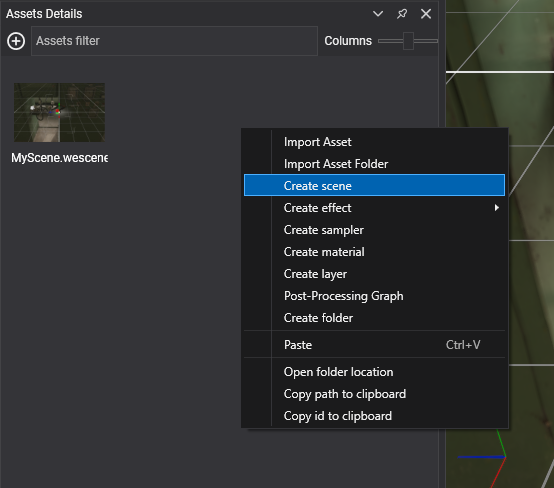
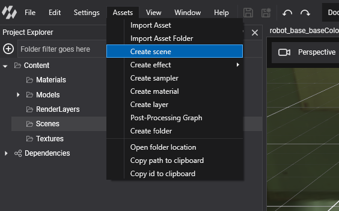

Create Scenes
Every new project contains a scene, Content/Scenes/MyScene.wescene, and a matching MyScene class in the base project. You add more scenes in the same two ways: as an asset that you edit in Evergine Studio, and optionally as a class that adds code to it.
Create a Scene in Evergine Studio
Scenes are assets, and they are created like any other asset:
- In the Assets Details panel, right-click and select Create scene.

- Or, in the main menu, select Assets > Create scene.

Note
The new scene is created in the asset folder selected in the Project Explorer panel, which is also the folder shown in the Assets Details panel.
Double-click the new asset to open it in the Scene Editor.
Create a Scene Class
A scene asset only contains data: entities, components and scene manager settings. To run code of your own when the scene is built, create a class that derives from Scene and load the asset as that class:
- Add a class to the base project of your solution, for example
LevelScene.cs. - Make it derive from
Scene. - Override the methods you need.
- Load the asset with
assetsService.Load<LevelScene>(...)(see ScreenContext Manager).
| Method | Description |
|---|---|
| RegisterManagers() | Registers the scene managers. The base implementation adds EntityManager, AssetSceneManager, BehaviorManager, RenderManager and EnvironmentManager if they are not present. Call it, then add your own managers. |
| CreateScene() | Called once, while the scene is initialized, after its managers are attached. Create and add entities from code here. |
| Start() | Called when the scene starts playing, after its managers have started. |
| End() | Called when the scene stops playing because its screen context left the stack. |
| Pause() | Called when the scene is paused, for example when another screen context is pushed on top of it. A paused scene is not updated. Call the base implementation. |
| Resume() | Called when a paused scene plays again. Call the base implementation. |
Note
Loading a scene asset creates your class with its parameterless constructor, adds the scene managers and entities saved in the asset, and only then calls RegisterManagers() and CreateScene() when the scene is initialized. Keep a public parameterless constructor, and let the base RegisterManagers() skip the managers the asset already added.
The Started, Paused, Resumed and Closed events let other objects react to the same moments without deriving from Scene.
This is the pattern of the template scene, extended to create a camera from code:
using Evergine.Components.Cameras;
using Evergine.Framework;
using Evergine.Framework.Graphics;
namespace MyProject
{
public class MyScene : Scene
{
public override void RegisterManagers()
{
base.RegisterManagers();
this.Managers.AddManager(new Evergine.Framework.Physics.PhysicsManager());
}
protected override void CreateScene()
{
// Entities saved in the scene asset are already here.
// Anything added now exists only at runtime and is not shown in Evergine Studio.
var cameraEntity = new Entity("camera")
.AddComponent(new Transform3D())
.AddComponent(new Camera3D())
.AddComponent(new FreeCamera3D());
this.Managers.EntityManager.Add(cameraEntity);
}
}
}
Scene Properties
| Property | Default | Description |
|---|---|---|
| Managers | The default scene managers | The scene managers of the scene. Managers.EntityManager is how you add and find entities. |
| Name | null |
A name for the scene, useful for logs and debugging. |
| Speed | 1 |
Scales the time the scene passes to its managers and behaviors. 0.5 runs the scene at half speed. It must be greater than 0. |
| IsVisible | true |
When false, the scene is still updated but not drawn. |
| IsPaused | false |
true while the scene is paused. Read only. |